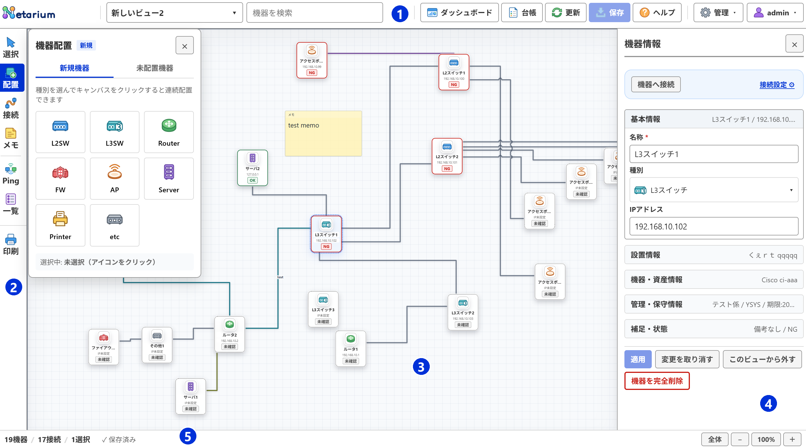
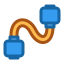
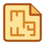
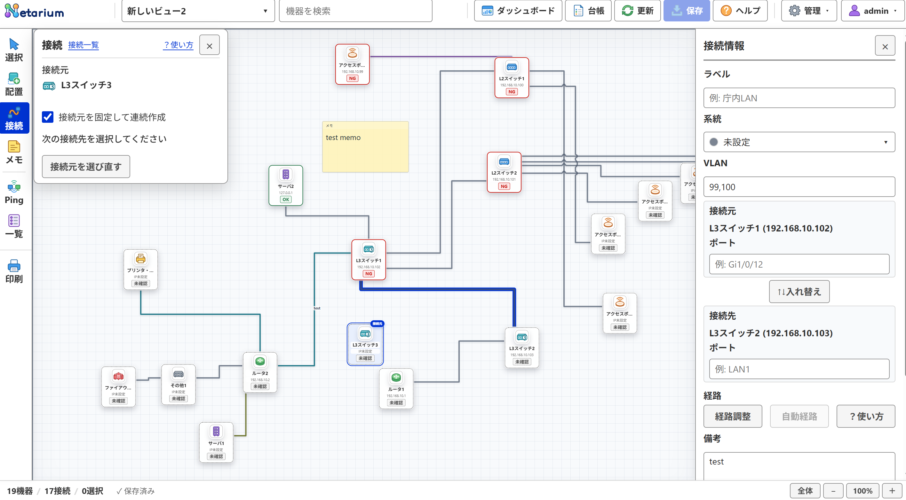
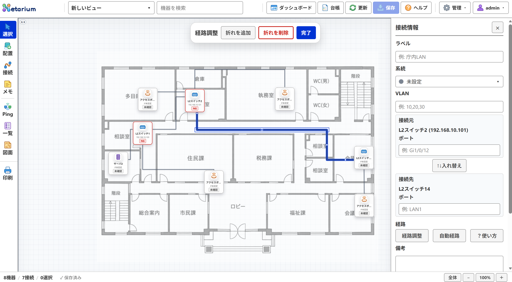
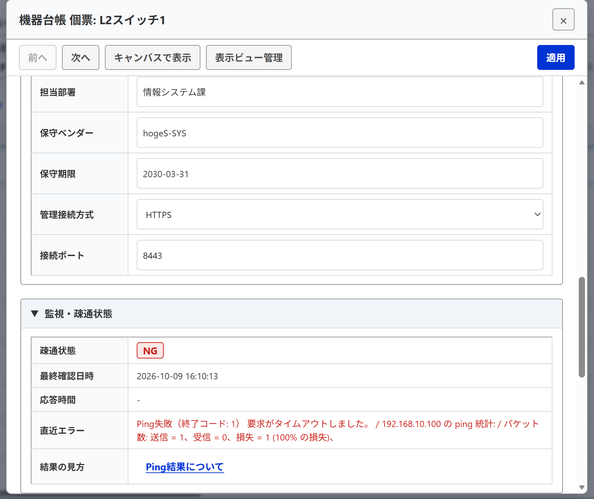
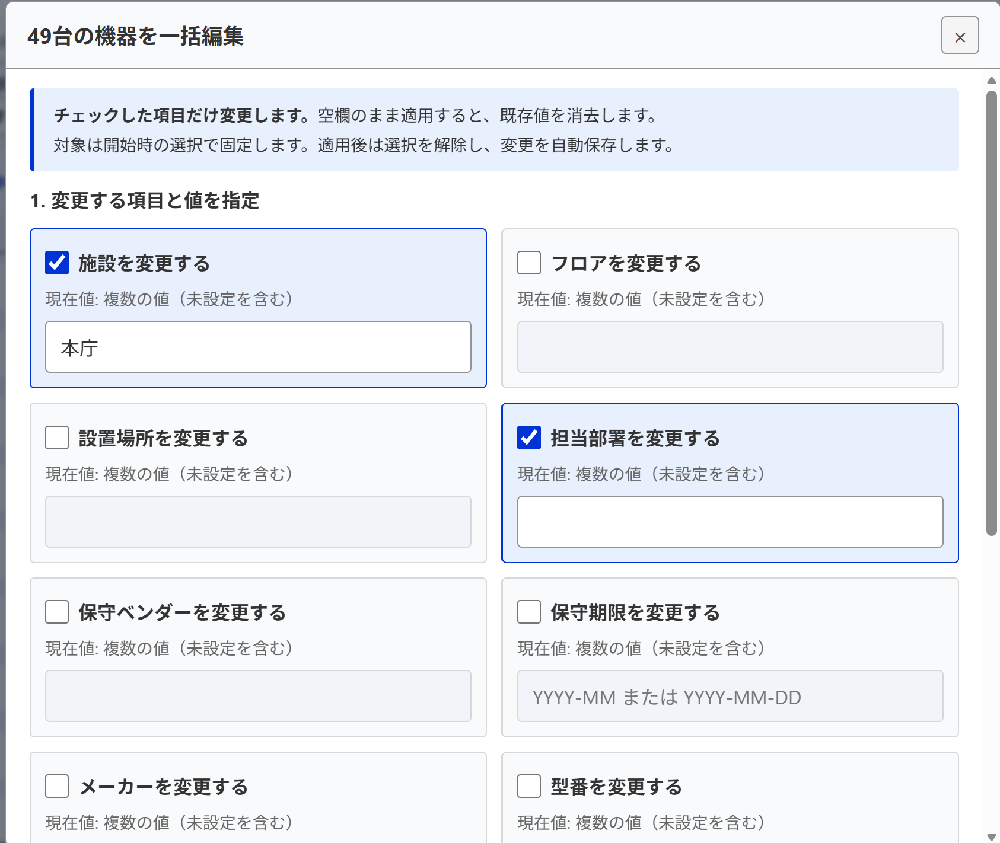
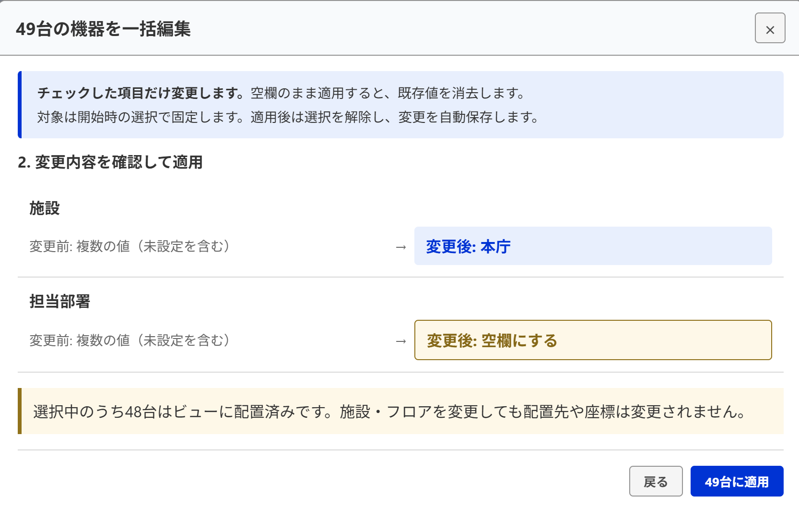
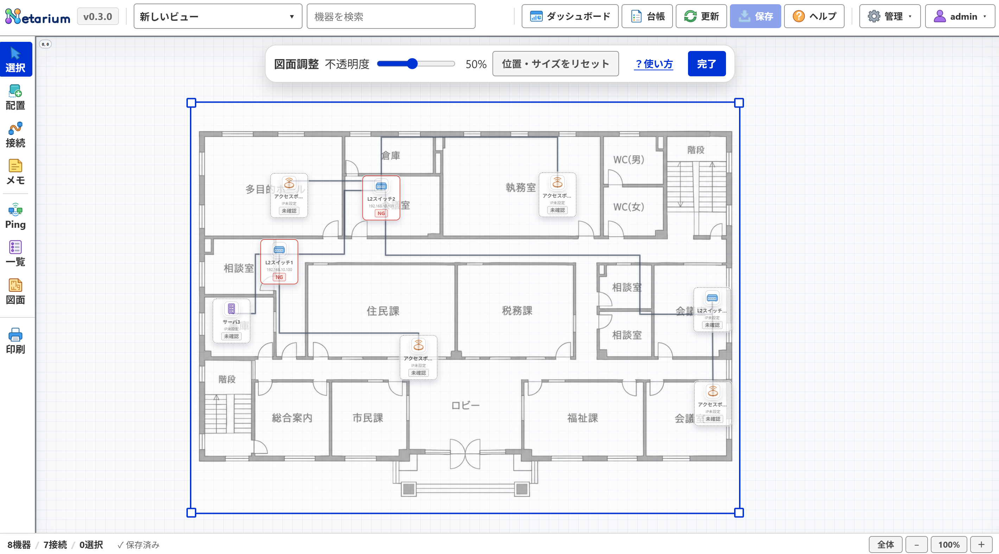
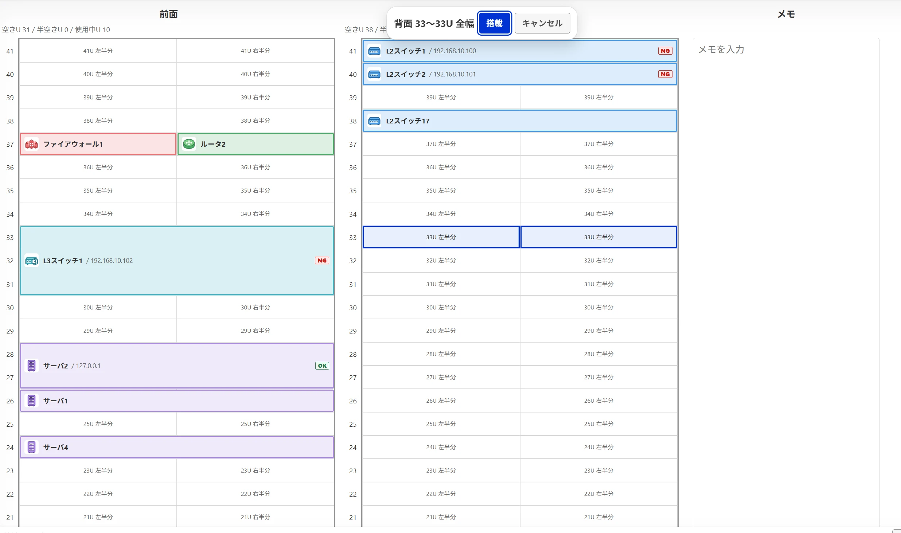

利用ガイド
Netarium（ネタリウム）は、庁内や組織内のネットワーク構成（論理構成図およびフロア物理配置図）の可視化、機器台帳の管理、および疎通確認（Ping）を集約して行うシステムです。
はじめて使うとき
編集・登録・Pingの実行は管理者の操作です。閲覧者は保存済みの構成・台帳・Ping結果の閲覧と印刷を利用できます。
- 上部バーで使うビューを選びます。必要なら「管理」→「ビュー管理」で登録します。
- 上部「台帳」で機器を新規登録し、必要な情報を入力して「適用」します。
- 台帳で機器をチェックして「ビューに配置」を選び、Canvasをクリックして配置します。
- 左の「接続」で接続元、接続先の順に機器を選びます。
- 下部ステータスバーが「保存済み」になったことを確認します。
本書に掲載している画面は架空のテストデータです。施設名や機器数は例示であり、実際の利用環境の値とは異なります。
本文中の画像は、クリックするか、Tabで選んでEnterを押すと拡大表示されます。拡大画面は「閉じる」ボタン、背景のクリック、またはEscで閉じられ、フォーカスは元の画像へ戻ります。
1. 画面構成と各領域の役割


| 領域 | 役割と主な機能 |
|---|---|
| ① 上部バー | ビュー（図面）の切り替え、機器検索（Ctrl+K）、ダッシュボードや機器台帳の起動、データの更新・保存、および各種管理操作を行います。 |
| ② 左作業パレット | 選択・配置・接続・メモなどの作業モードと、Ping・一覧・図面・印刷の操作を利用できます。「印刷」は作業モードを変更せず設定画面を開きます。 |
| ③ キャンバス（Canvas） | 機器アイコン、接続、メモ、およびフロア図面を表示する作業領域です。フッター右端の操作（全体 / − / 現在倍率 / ＋）で表示倍率や表示位置を調整します。 |
| ④ 右プロパティパネル | キャンバス上で選択した機器や接続の詳細情報を閲覧・編集する領域です。 |
| ⑤ ステータスバー | 左側に現在ビューの機器数、接続数、選択数、および保存状態（保存済み / 保存待ち / 保存中 / 競合あり / 保存失敗 / 未確認）を表示します。未確認時だけ、保存状態の左隣に「保存状態を確認」を表示します。 中央には処理状況、Ping結果と「結果を表示」、CSV出力などの短時間の案内を表示します。長い文は省略されますが、マウスポインターを重ねると全文を確認できます。右端にはキャンバスの表示操作を固定し、右パネルの開閉では移動しません。狭幅では左・中央を横スクロールでき、Tabでも操作ボタンへ移動できます。モーダル表示中はキャンバスの表示操作を隠します。 |
操作に伴うメッセージは、情報の性質に応じて表示位置が分かれています。画面の変化で把握できる通常の操作では通知を出さず、操作の中断理由や処理の失敗のみを下部中央に表示します。入力内容の不備は該当する入力欄の直下に表示し、保存状態はステータスバーの左側、認証の有効期限切れは画面上部に継続表示します。
2. キャンバスの表示と基本操作
- キャンバスの移動（パン）: 空白部分をドラッグすると、キャンバス全体をスクロールできます。
- 表示倍率の調整（ズーム）: マウスホイールの回転、またはフッター右端の「＋」「−」「全体」「現在倍率」ボタンで倍率を切り替えます。現在倍率を押すと標準の100%へ戻ります。初期表示および「100%」では原点を左上端に合わせ、配置不可領域用の余白を設けません。「全体」は原点を含む機器・メモの配置範囲を左上端から収め、フロア配置図では表示中の図面全体を優先します。前回の表示位置がブラウザに保持されるため、配置不可領域が広く見える場合は現在倍率または「全体」で位置を合わせ直してください。
- 機器の選択と移動: 機器をクリックすると選択状態になり、右側にプロパティパネルが開きます。機器をドラッグすると配置座標を変更できます。
- 複数選択: Shiftキーを押しながら空白部分をドラッグすると矩形選択枠が広がり、囲んだ機器を一括で選択できます。Ctrlキーを押しながらクリックすると、個別の追加選択が可能です。
- 機器検索: Ctrl+Kキーを押すと上部バーの検索欄にフォーカスします。機器名称やIPアドレスから対象機器へ素早く移動できます。
3. 作業モードと接続作成
| 操作 | 説明 |
|---|---|
| 選択 | 通常の操作モードです。機器の選択、移動、およびプロパティパネルでの詳細確認・編集を行います。 |
| 配置 | （管理者のみ）「新規機器」では種別を選んでキャンバスをクリックします。「未配置機器」では候補をチェックして「配置待ちに追加」を押し、キャンバスをクリックして順に配置します。 |
 接続 |
（管理者のみ）接続作成モードです。左の補助パネルで接続元を確認し、キャンバス上で接続先を選びます。接続元を固定して連続作成できます。 |
| メモ | （管理者のみ）空白部分をクリックして補足説明を連続配置します。機器の属性や接続の備考とは別に保存します。 |
| Ping | 管理者が、現在のビューで選択した機器に対して手動でPingを実行します。 |
| 一覧 | 現在のビューに配置されている機器や接続の一覧パネルを表示し、キーボード操作で選択できます。 |
 図面 |
（物理フロアビュー時のみ）フロア下絵図面の登録、表示倍率や位置の調整を行います。 |
| 印刷 | 現在のビューの印刷設定を開きます。閲覧者も利用でき、作業モードは変更しません。 |
接続の作成と削除
接続は同一ビューに配置した機器同士を結びます。作成は管理者のみ利用でき、閲覧者は保存済みの接続を閲覧できます。


- 左の「接続」を押します。一覧が開いている場合は閉じ、接続モードの補助パネルを表示します。接続元欄は「未選択」となり、固定チェックボックスと選び直しボタンは接続元を選ぶまで操作できません。
- キャンバス上で接続元の機器をクリックします。キーボードではTabで機器へ移動し、EnterまたはSpaceで選べます。補助パネルに機器名とIPアドレスが表示され、案内が「接続先の機器を選択してください」に変わります。
- 接続先の機器をクリックします。作成した接続は自動保存されます。通常は接続元の選択が解除され、次の接続元を選べます。
同じ機器から続けて接続する場合は、補助パネルで「接続元の固定」を有効にします。作成後も接続元の選択が維持され、案内が「次の接続先を選択してください」に変わるため、接続先を順にクリックして連続作成できます。機器自身への接続や重複など、不正な指定で接続が作成されなかった場合も接続元は保持されます。空白部分をクリックしても接続元は解除されません。
接続元を変更する場合は、補助パネルの「選び直し」ボタンを押します。接続元と固定状態が解除され、「接続元の機器を選択してください」の初期案内へ戻ります。
補助パネルのヘッダーにある「接続一覧」を押すと、現在ビューの一覧パネル（接続タブ）が開き、作成済みの接続を確認できます。「？使い方」を押すと本利用ガイドを別タブで開きます（狭い画面では「？」と表示されます）。
右上の×またはEscで接続モードを終了します。固定のチェックボックスにフォーカスがある場合もEscで終了できます。「選択」・配置・メモ・図面調整・経路調整への切替、ビュー切替、データの再読込でも接続元と固定状態を解除します。作成済みの接続は取り消されません。接続元の選択状態と固定設定はブラウザ上の作業状態であり、データベースやバックアップには保存されません。
接続を選択すると、右側の「接続情報」にラベル、系統、VLAN、接続元、接続先、経路、備考の順で表示します。接続元・接続先の枠には機器名とIPアドレス、ポートをまとめています。「↑↓入れ替え」で機器と入力中のポートを一緒に交換できます。入れ替えは「適用」で確定して自動保存し、「変更を取り消す」で未適用の変更だけを破棄して前回適用した値に戻します。
接続を削除する場合は、キャンバス上で接続を選択してDeleteキーを押します。確認ダイアログで確定すると削除され、自動保存されます。文字入力中、ダイアログ表示中、経路ハンドルにフォーカスがある場合は、キー操作による接続全体の削除は動作しません。
接続系統
「管理」→「接続系統設定」で、全ビュー共通の系統名と色を管理します。名称は100文字以内、色は用意された8色から選びます。閲覧者は系統名・色・使用件数を確認できますが、登録・変更・削除はできません。
広い画面では左が接続系統の一覧、右が設定です。狭い画面では一覧の下に設定を表示します。一覧から系統を選び、名称・色を変更して設定欄下部の「適用」を押します。一覧上部の「新規作成」の隣にある「再読込」で最新の設定を取得します。
新しい系統は「新規作成」を押し、名称と色を入力して設定欄下部の「登録」を押します。同じ欄の「キャンセル」で入力を破棄して直前の系統へ戻ります。直前の系統がなくなっている場合は残る系統を表示し、登録済み系統がない場合は設定画面を閉じます。
色は、設定欄に常時表示される8個（2列×4行）の候補から色見本と色名で指定します。選択中の候補は薄い背景色とチェックマークで示されます。Tabで選択中の候補へ移動したあとは、矢印キー・Home・Endで選択を切り替え、EnterまたはSpaceでも確定できます。色を選ぶだけでは保存されず、設定欄下部の「登録」または「適用」を押した時点で確定されます。
右上の×またはEscで設定画面を閉じます。未適用の変更がある場合、選択の切替・新規作成・キャンセル・再読込・画面の閉鎖時に破棄を確認します。ヘッダーの「？設定方法」からこの章を別タブで開けます。
使用中の系統でも名称・色は変更できます。「適用」すると、その系統を使う全ビューの接続に新しい名称・色が反映されます。各接続の系統割当、接続元・接続先、ポート、VLAN、経路は変更されません。変更した画面にはすぐ反映され、別の利用者・タブではデータの再読込後に反映されます。
使用中の系統は削除できません。設定画面の使用件数を確認し、該当する接続をあらかじめ別の系統または「未設定」へ変更して保存してください。設定画面は起動時の使用件数を保持しているため、全ビューで使用件数が0になったあとは、設定画面の「再読込」を押して最新情報を取得してから削除します。
接続情報で系統を選び「適用」すると自動保存されます。未設定は従来の標準色です。設定した色は選択・hover・手動経路・交差表現でも維持され、印刷にも反映されます。
接続情報と一括設定の系統選択は、色の丸と系統名を同じ欄に表示します。矢印キー・Home・Endで候補を移動し、EnterまたはSpaceで選びます。Escは候補だけを閉じます。一括設定で系統を外す場合は「未設定（割り当て解除）」を選び、確認後に「適用」します。
ビュー・機器のリンクを共有する
ビュー選択欄の右隣にあるコピーアイコンで現在ビューへのリンクを取得できます。アイコンにポインターを合わせると「現在のビューのリンクをコピー」と表示します。機器の詳細パネルや台帳個票の「機器のリンクをコピー」も、管理者・閲覧者のどちらでも利用できます。未保存のビュー・機器は、保存してからコピーしてください。自動コピーが使えない場合、ビューのリンクはヘッダー下の小型ポップオーバーに表示します。表示されたリンクを選択して手動でコピーし、「閉じる」または Esc で閉じてください。
キャンバスの機器詳細からコピーしたリンクは、そのビューの配置を開きます。台帳個票のリンクは機器だけを指定し、配置先が複数あればビューの並び順、同順なら ID 順で先頭を開きます。未配置機器は台帳個票を開き、新しい配置は作りません。名称を変更してもリンクは利用できますが、対象を削除した場合や指定ビューに配置がなくなった場合は開けません。
リンクの利用にはログインが必要です。未ログインの場合はログイン後に対象へ戻ります。パスワード変更が必要な場合は、変更と再ログインを先に行います。リンクを開くだけで保存・編集・Ping を実行することはなく、リンクの所持によって権限が増えることもありません。
ビュー内一覧と一括設定
左「一覧」は現在ビューの「機器」「接続」を件数付きタブで切り替えます。「機器」では、現在ビューに配置した機器を探して選択できます。全機器の登録・管理は上部「台帳」を使います。
機器タブの「台帳で開く」を押すと、それまでの検索条件を初期化し、台帳の「表示ビュー」に現在ビューを指定した状態で開きます。「表示ビュー」では別のビューを追加・解除できます。台帳側で条件を変更してもキャンバスのビューは切り替わりません。上部バーの「台帳」ボタンから開く場合はビュー条件のみを解除し、その他の絞り込み条件を引き継ぎます。絞り込みの操作手順は「機器台帳・ダッシュボード・品質診断」を参照してください。
台帳で選択中の機器が別のビューへ切り替わった際に意図しない一括操作を防ぐため、表示ビューの選択集合を変更したときは機器行のチェック選択を解除します。その他の絞り込み条件や検索文字を変更した場合は表示外のチェックも保持されるため、一括編集やPingの実行前に対象件数と表示外件数を確認してください。
接続はラベル・機器名・ポート・VLAN・系統名で検索できます。系統のない接続は「未設定」で検索します。行本体を押すとキャンバスの接続を選択し、チェックは一括設定の対象だけを変更します。「すべて選択」は検索結果の接続だけを対象にします。検索条件の変更後も選択は残るため、表示外の選択件数を確認してください。
接続の行本体を押したとき、線の一部が左右パネルを除いた領域に見えていれば、表示位置と倍率を維持します。線全体が画面外またはパネルの裏に隠れている場合だけ、経路の長さ中点が見える領域の中央に来るよう、倍率を変えずに表示位置を移します。狭い画面では機器行と同様に一覧を閉じます。チェックボックスや「すべて選択」では表示位置を移しません。
「一括設定」で変更する系統・VLAN・ラベル・備考をチェックします。OFFは現在値を保持し、ONの空欄は値を消します。系統を解除する場合は「割り当て解除」を選びます。接続元・接続先・ポート・経路は変更しません。「変更内容を確認」で変更前後と空欄化を確認し、対象件数を示す「適用」ボタンで確定すると自動保存されます。確認画面の「戻る」は入力を保持し、この段階では保存しません。競合時は変更内容を控えて接続情報の「競合したビューを再読込」で対応します。閲覧者も一覧・検索・行選択・系統閲覧は利用できますが、系統編集や一括設定はできません。
選択した接続の経路を調整する（管理者のみ）
経路調整は、接続線の自動計算経路を手動経路へ切り替え、水平・垂直の各区間や折れ目を任意の位置へ動かす機能です。論理構成図とフロア物理配置図のどちらでも利用できます。なお、フロア図面自体の調整を行っている間は経路調整を起動できません。図面の調整を完了してから接続の経路を調整してください。
操作中に右パネルの「？使い方」を押すと、キー操作などをまとめたミニヘルプを開けます。ミニヘルプ内のEscキーはヘルプ画面のみを閉じ、経路調整モードは終了しません。


- 接続を選択し、右パネルの「経路調整」を押します。論理構成図・フロア配置図のどちらでも使えます。現在の自動経路を初期値として手動経路へ切り替え、この切替時点で自動保存します。斜めの直線は水平・垂直の経路になります。
- 調整したい区間を選び、水平区間は上下、垂直区間は左右へドラッグします。機器の端点は動きません。Tabで区間へ移動し、矢印キーでも調整できます。1回で1座標単位、Shiftを押すと10座標単位動きます。
- 上部ツールバーの「折れを追加」で2点の段差を増やし、追加した区間を調整します。直線の場合は両端を固定したコの字になります。上限は8折れです。「折れを削除」は選択区間近くの2中間点を除き、水平・垂直につなぎ直します。直交性に必要な最小の折れは残します。
- 右パネルの「自動経路」は、確認後に手動経路を破棄して自動計算へ戻します。すでに自動経路の場合は無効、調整開始後や手動経路の場合は有効です。上部ツールバーの「完了」は編集を終了します。操作確定ごとに自動保存されるため、別途「保存」を押す必要はありません。
ドラッグ中は保存せず、マウスやタッチを離した時点で確定します。ESC、選択解除、別の接続の選択、ビュー切替で編集を終了し、未確定のドラッグだけを破棄します。確定済みの経路は取り消しません。ラベルやポートなどの未適用入力は経路操作で適用されません。
保存中も調整を続けられます。保存の返答を待つ間に複数の操作を確定した場合は、返答後に最新の経路をまとめて保存します。
同じビューを別の利用者が更新して保存が競合した場合は、調整を終了し、未確定のドラッグだけを破棄します。確定済みの未保存経路は画面に保持しますが、他の利用者の変更を自動で上書きしません。内容を控えたうえで、接続情報の「競合したビューを再読込」を押してください。破棄を確認すると、そのビューの未保存変更と未適用入力を捨てて最新データを読み込みます。必要な調整は最新データでやり直してください。
機器を移動すると端点は自動追従し、内部の中間経路は可能な範囲で維持されます。重複点や同一直線上の不要な点は描画時に整理されますが、意図的な折り返しを残すため、Uターン形状の経路も自動削除されません。不要な折れ目は上部ツールバーの「折れを削除」で取り除くか、右パネルの「自動経路」を押して自動計算へ戻してください。
保存済みの手動経路は閲覧者にも表示します。接続を選択して接続情報を確認できますが、経路や属性は編集できません。手動経路のラベルも経路全体の長さの中央を基準に表示し、交差付近では読みやすい位置へ少し移動します。
接続の重なりと交差の見分け方
同じスイッチから複数のAPなどへ接続する場合、接続線は機器付近から分岐し、長い平行区間をできるだけ離して表示します。機器が密集している場合や接続が多い場合は、重なりが残ることがあります。
交差では一方の線を山形ブリッジ、または短い切れ目で表示し、接続点との違いを示します。自動経路・手動経路のどちらも同じ表示方式を使います。切れ目は透過しており、背景のフロア図面を塗りつぶしません。機器への接続部分や短い区間、大量の交差では交差表現を省略する場合があります。線にマウスを重ねるか選択すると、選んだ交差表現を保ったまま経路が太い縁取り付きで手前に表示されます。山の部分や切れ目部分でも接続をクリックできます。
上部「管理」→「表示設定」で「山形ブリッジ」または「切れ目（透過）」を選びます。初期値は山形ブリッジです。閲覧者も変更でき、選択すると現在のキャンバスにすぐ反映されます。設定はこのブラウザーに保存され、再読み込み後も維持されます。ブラウザーへの保存が使えない場合は山形ブリッジに戻ります。構成データや保存状態は変わらず、CSV・バックアップ・復元の対象にもなりません。
同じ「表示設定」で「選択した機器の接続関係を強調する」をオンにすると、機器を1台だけ選択したときに、現在ビューで直接つながる機器と接続線を見分けられます。無関係の機器・接続は半透明になりますが、クリックやマウスを重ねる操作はそのまま使えます。2台以上先や別ビューの接続は対象にしません。直接の接続がない機器では、選択した機器だけを通常表示します。
強調の初期値はオフです。管理者・閲覧者とも変更でき、交差の表現とは別にこのブラウザーへ保存します。選択解除・ビュー切替・機器情報パネルを閉じる操作で設定は変わりません。未選択・複数選択や範囲選択中、接続やメモの作成中、接続1本の選択中は通常表示になります。ブラウザーへの保存が使えない場合はオフに戻します。印刷にはこの強調を反映しません。
機器を移動すると接続経路を再計算します。機器の位置と接続が同じであれば、画面を再描画しても同じ経路になります。
キャンバスにメモを置く（管理者のみ）
- 左の「メモ」を押し、空白部分をクリックします。本文入力欄にフォーカスするので、そのまま入力してください。本文は1000文字以内で、𠀀などの補助漢字も1文字として数えます。上限を超えると保存せず入力を保持するため、短くして再度確定してください。改行を保持し、HTMLやMarkdownとしては解釈しません。
- Ctrl+Enter、または入力欄からフォーカスを移すと本文を確定して自動保存します。続けて空白部分をクリックすると次のメモを作れます。既存メモはダブルクリック、または選択後のEnterで本文を編集します。
- 上端の「メモ」部分をドラッグして移動し、選択中の右下ハンドルで幅と高さを調整します。ドラッグを離した時に確定します。右下ハンドルは矢印キーでも調整でき、Shiftを押すと10座標単位ずつ変更します。
- 上部の共通ツールバーで背景色・透明度（20〜100%）・文字サイズ（12〜32px）・文字色を変更します。背景色と文字色は、選択中の色付き四角を押して開く8色の一覧から選びます。色名は四角にポインターを重ねると表示されます。色を選んだ時、または数値を確定した時に自動保存します。透明度は背景だけに適用し、文字は薄くしません。
- 削除は共通ツールバーの「削除」またはDeleteから確認します。本文やツールバーの入力中はDeleteによるメモ削除を実行しません。
背景色は黄・ピンク・オレンジ・緑・青・紫・グレー・白、文字色は黒・白・赤・青・グレー・緑・紫・茶です。色の一覧は矢印キーで移動し、EnterまたはSpaceで確定できます。Escは一覧だけを閉じ、選び直さなければ既存の色を保持します。通常幅ではメニュー全体に必要な幅を確保し、狭い画面では折り返します。
「完了」、Esc、左の「選択」、別の作業モードやビューへの切替で終了します。入力中の本文は確定し、ドラッグ中の移動・サイズ変更や未確定のスタイル表示は破棄します。確定済みの変更は取り消しません。
メモは接続線より前、機器より後ろに表示します。接続経路の自動計算では障害物にしません。接続が読みにくい場合はメモの位置や透明度を調整してください。「全体」は論理構成図では機器とメモを含め、フロア配置図では表示中の図面を優先します。図面がない場合は機器とメモを対象にします。
閲覧者は保存済みメモを閲覧・テキスト選択できますが、変更できません。メモはバックアップ・復元の対象で、機器台帳CSVには含みません。同じビューの保存が競合した場合は、確定済みの未保存変更を保持して編集を制限します。内容を控え、ビュー管理の「競合したビューを再読込」で破棄を確認して最新データを読み込んでください。
構成図を紙・PDFへ出力する
- 印刷したいビューを開き、左の「印刷」を押します。左に設定、右にプレビューを表示します。狭い画面では上下に並びます。「全体」は印刷対象を収め、「現在の表示範囲」は今見えている範囲で切り取ります。フロア図面を含めた全体印刷では、図面全体が基準になります。
- 印刷する機器種別と表示内容にチェックを入れます。機器を除外すると、その機器につながる接続も除外します。接続を外すと接続ラベルも印刷しません。外部共有時は、キャンバスメモや機器名、機器種別、IPアドレスを含めるか確認してください。機器種別は短縮名（L2SW, L3SW, RT, FW, AP, SV, PR, PC, etc）で印刷されます。
- 向きを「自動」「横」「縦」から選びます。自動では印刷範囲の縦横比から向きを決めます。設定を変えると、その場でプレビューが更新されます。
- プレビューを確認し、下部の「印刷」を押します。画像準備中は印刷できません。ブラウザー印刷画面で用紙サイズ・プリンタ・部数・PDF保存を指定します。ブラウザーのヘッダー／フッターを不要にする場合も、この画面で指定してください。巨大な構成図では文字が小さくなるため、現在範囲の印刷や大きい用紙を検討してください。
フロア図面は画像として印刷し、背景グラフィック設定だけには依存しません。手動経路と現在の接続の交差表示方式、メモの位置・サイズ・装飾を反映します。画面の管理ツールやプロパティパネルは印刷しません。
設定・プレビュー・印刷のキャンセルは、通常キャンバスの表示倍率・位置・選択・作業モードを変更しません。印刷設定は保存データに含めず、新しく開くたびに初期値へ戻ります。印刷には確定済みの表示データを使うため、編集欄の未適用入力や調整中の仮表示は先に確定してください。閲覧者も印刷できます。
4. 機器情報の編集と登録画像
- プロパティパネルと個票での編集: キャンバス上の機器をクリックすると右側にプロパティパネルが開き、機器台帳の一覧をクリックすると個票が開きます。各項目の入力後、「適用」を押すと内容が検証され、自動保存されます。
- 右パネルの見方: 「基本情報」「設置情報」「機器・資産情報」「管理・保守情報」「補足・状態」の見出しで開閉します。閉じた欄の要約で概要を確認し、必要な欄だけ開いて入力できます。
- 入力候補とエラー表示: 施設、フロア、設置場所の各項目では、登録済みの既存値がプルダウン候補として表示されます。候補にない新しい値の直接入力も可能です。入力内容に不備がある場合、「適用」押下時に該当する入力欄の直下にエラーが表示されます。
- 機器画像の登録と閲覧: 機器には最大3枚の画像（PNG/JPEG）を登録できます。入力は1枚10MiB、各辺4,000px、総画素数1,200万以下です。EXIFの向き補正後に長辺2,048px以下へ縮小し、小さな画像は拡大せず、PNGの透過を保持します。アップロード原本は残らないため、必要な原本は登録前に別途保管してください。保存済みの機器であれば、未適用の入力や保存処理の完了を待たずに画像の追加・変更が可能です。右パネルや個票のサムネイルをクリックすると拡大表示され、「前の画像」「次の画像」ボタンで一覧の表示順に画像を切り替えられます。先頭・末尾の画像では該当する切り替えボタンが無効化されます。
機器個票の編集


機器へ管理接続する
右パネルや個票の「機器へ接続」から、HTTP／HTTPSは別タブで、SSHは端末の外部アプリで開きます。接続画面の一時的な方式・ポート変更は機器情報へ保存しません。
SSHによる接続には、端末への対応クライアントの導入と、OSにおけるssh://プロトコルの関連付けが必要です。WindowsではSSH接続画面の「？接続方法」を開き、クライアントごとのURI対応状況と登録手順を確認してください。Tera Termなどを利用する場合も、導入済みバージョンのssh://対応を確認し、未対応の場合は手動でクライアントを起動してIPアドレスとポート番号を入力します。リンクから起動しない場合は、OSのプロトコル関連付けと、ブラウザによる外部アプリケーション起動許可の設定を確認してください。Netariumはユーザー名・パスワード・秘密鍵を保持・仲介しません。
5. 機器台帳・ダッシュボード・品質診断
- 機器台帳: 上部バーの「台帳」ボタンから開きます。登録済み機器の一覧表示、列プリセットによる表示項目の切り替え、CSVファイルの入出力、および機器の新規登録や一括編集を行います。台帳で選択した機器は「ビューに配置」から配置キューに追加できます。
- ダッシュボード（管理者のみ）: 上部バーから開きます。初期表示の「運用状況」では機器総数、監視状態、データ品質を、「資産・保守」では保守期限の見通しと施設・フロア・種別の内訳を確認できます。左右矢印キー・Home／Endでタブを切り替えます。タブ切替では再取得せず、右上の「更新」で再集計します。その隣の×で閉じ、開き直すと「運用状況」に戻ります。「未配置」は全ビューで未配置の機器を台帳に表示します。
- 機器内訳・ラック管理: 「資産・保守」は保守期限・機器内訳・ラック管理の順にカードを表示します。機器内訳の登録機器数と機器種別の分類数、ラック管理の登録ラック数と搭載機器数は常時表示します。「内訳を見る」「ラック一覧を見る」のクリック、またはボタンにフォーカスして Enter／Space で詳細を独立して開閉できます。タブ切替・詳細開閉ではダイアログの外枠サイズは変わらず、内容が多い場合は内部をスクロールします。機器内訳の行から台帳を絞り込み、ラックの行全体から対象ビューへ移動できます。各ラックには搭載機器数と前面・背面の空き U 数・占有バーを表示します。空き U はその面の左右両スロットが空いている U 数で、半空き U は含みません。棒は左右 2 スロットを基準とした占有割合です。搭載数は前後面やハーフ幅による表示の重複を含みません。未登録でも 0 件を表示し、開き直すと両方の詳細が閉じた状態に戻ります。
- データ品質診断: 上部バー管理メニューの「品質診断」またはダッシュボードから起動します。未配置の機器、未接続のポート、IPアドレスの重複などを自動診断し、重要度別サマリーやカテゴリごとに一覧表示します。各問題の「台帳で修正」「配置する」「図面を登録」などの操作ボタンを押すと、診断画面を開いたまま該当する修正画面へ直接移動できます。
台帳の表示項目とセル操作
「表示項目」が「すべて」の場合は、項目別の幅で全列を表示します。他の選択肢では表示領域に合わせて列幅を自動調整し、操作列を右端に固定します。狭い画面では横スクロールして他の列を確認できます。
管理者は種別欄を開き、アイコン付きの候補から機器種別を1つ選択できます。矢印キー・Home／Endで候補を移動し、Enter／Spaceで確定します。Escは選択を確定せず候補だけを閉じます。変更は他の台帳入力と同様に下書きとして保持します。閲覧者やPing実行中は変更できません。
機器種別の「PC」はデスクトップとノートを共通で扱います。管理IPは空欄でも登録でき、設定した場合は既存のPingを利用します。OSなどの専用項目はありません。必要な情報は型番・メーカー・備考などへ記録してください。CSVの種別キーはpcで、既存の19列と列順は変わりません。
状態は緑の「✓ OK」、赤の「× NG」、灰色の「未確認」、実行中の青い「確認中」で区別します。Canvasでは「OK」「NG」「未確認」「確認中」を表示し、アイコンではなく機器ノードの外枠に状態色を付けます。機器ノードや一覧の機器行にポインターを重ねると、取得済みの応答時間・最終確認・エラーを確認できます。確認中のtooltipには過去の結果を表示しません。一覧の2段表示は変わりません。「監視詳細」または「すべて」のエラー列では、「詳細」を押すと内容を開閉できます。エラーがない場合は「—」です。
PingのNGは、直ちに機器の停止を意味するものではありません。機器側でICMPパケットの応答が無効化されている場合や、途中のファイアウォールによる遮断、ネットワーク障害によって、稼働中であっても応答が返らないことがあるためです。同様に「OK」もIP層での疎通を示すのみであり、HTTPやSSHなどのサービス正常性を保証するものではありません。右プロパティパネルおよび機器個票の「Ping結果について」からも同様の注意点を確認できます。
台帳の複数条件による絞り込み
表示ビュー、施設、フロア、状態、種別、IP登録、配置状態、保守期限の8項目は、それぞれ複数の値を選択できます。同じ項目の値はいずれかに一致する機器を表示するOR条件、項目間と検索はすべてに一致する機器を表示するAND条件です。0選択の項目は「すべて」となり、その項目では絞り込みません。
各選択欄のボタンには、0選択で「すべて」、1件で選択値のラベル、複数件で選択件数を表示します。ボタンを開き、候補を押すたびに選択・解除できます。候補一覧は選択後も開いたままです。キーボードでは矢印キーで候補を移動し、Home／Endで先頭／末尾へ移動、Enter／Spaceで選択・解除します。Esc、Tab、フォーカス移動または外側のクリックで閉じます。
選択値と検索条件はチップで表示します。各チップの「×」はその値または検索条件だけを解除し、「条件を解除」は検索と8項目をすべて解除します。表示ビューを複数選ぶと、選んだビューのいずれかに配置した機器を重複なく表示します。同名のビューもIDで区別するため、別々の候補として選択できます。
絞り込みの選択は、機器行のチェック選択とは別の操作です。表示ビューの選択集合を変更した場合だけチェック選択を解除し、他の条件や検索を変えた場合は表示外のチェックも保持します。「条件を解除」もビュー条件があればチェック選択を解除します。一括編集やPingの前に対象件数・表示外件数を確認してください。チェックをすべて外す操作は「選択を解除」です。CSV出力は絞り込みやチェックに関係なく、保存済みの全機器が対象です。
保守期限の見通しと台帳への移動
「資産・保守」の期限超過・残り1年以内・残り1〜2年の件数を押すと、その区分の機器台帳を開きます。台帳では「保守管理」列を一時表示しますが、保存済みの列設定は上書きしません。期限条件の全解除、台帳を閉じる操作、別の入口からの表示で保存済みの列へ戻ります。表示項目を手動で変更した場合は、従来どおりその選択を保存します。
台帳の保守期限フィルターには「2年超」「期限未登録」もあり、閲覧者も絞り込みを利用できます。期限条件が有効な間は期限の早い順に並びます。行の「詳細」から個票の保守期限・ベンダー・担当部署を確認し、管理者は既存の編集・適用操作で更新できます。全体検索や品質診断から特定の機器へ移動する場合は、期限条件を含む絞り込みを解除して対象機器を表示します。
基準日はブラウザーのローカル日付です。今日が期限なら「残り1年以内」、ちょうど1暦年後も同区分、ちょうど2暦年後は「残り1〜2年」です。うるう日の暦年加算は対象年の2月末に丸めます。YYYY-MM は年月のみの情報として元の値を保ち、その月の末日を暫定期限とします。空欄は「期限未登録」で異常扱いせず、形式不正は区分集計から除外するため、既存の品質診断で確認してください。
保守期限は契約延長や機器更改の検討目安です。期限の接近だけで更改必須・障害とは判定せず、新しい品質警告も追加しません。
チェックした機器のPing（管理者のみ）
- 未適用の入力を適用し、保存が完了してから、台帳のチェックボックスで対象機器を選びます。見えているだけの機器は対象になりません。
- 選択件数と表示外の選択件数を確認し、「Ping（件数）」を押します。0件では実行できません。実行中はフッターに対象件数と経過秒数を表示します。APIから途中の完了件数は取得できないため、完了台数の進捗率は表示しません。
- 完了後、フッターまたは台帳の「結果を表示」から「Ping実行結果」を開きます。OK・NG・タイムアウト・スキップ・未確認の件数と、機器名・IPを同じ欄にまとめた一覧で確認できます。理由は「詳細」を押して展開します。「失敗のみ」はNGとタイムアウト、「成功のみ」はOKが対象で、スキップ・未確認は「すべて」で確認します。結果画面は右上の「×」またはEscキーで閉じます。
- 一覧上部の「CSVダウンロード」は絞り込みにかかわらず今回の全件を、実行日時・機器名・IP・結果・応答時間(ms)・エラー概要として出力します。ファイル名は開始時のローカル日時による
ping_yyyymmdd_hhmmss.csvです。日本語を扱うためBOM付きUTF-8とし、数式として扱われる文字列は先頭アポストロフィで保護します。 - NGだけ再確認する場合は「選択を解除」で表示外も含む選択を解除し、状態を「NG」に絞り込みます。対象をチェックし直してPingを実行します。見出しのチェックボックスは表示中の行だけを選択します。
左作業パレットの「Ping」は、現在のビュー上で選択している機器に対して疎通確認を行う操作です。全機器を対象とする場合は台帳の一覧から対象を選択して実行します。閲覧者は実行済みの結果を確認できますが、Pingの新規実行は行えません。
既定では1回100件まで、1台ずつ実行します。IPなし・形式不正・許可外IPはスキップします。個別タイムアウトは1秒、全体のソフト期限は120秒です。期限を超えると残りをスキップし、完了済みの結果は保存します。タイムアウトは状態「NG」、スキップは「未確認」です。通信が切れた場合は再読み込みで保存結果を確認してください。
結果の閲覧・閉鎖で台帳の選択、検索・フィルター条件、スクロール位置、監視状態は変わりません。直近1回を再表示できますが、新しいPingの開始や画面の再読み込みで置き換え・消去されます。履歴管理やサーバーへの永続ログ保存は行いません。API要求自体が失敗した場合は結果画面で処理エラーを確認できます。「監視詳細」では保存済みの状態・最終確認・応答時間・エラーを確認します。
選択した機器の一括編集（管理者のみ）
台帳のチェックボックスで1台以上を選択し、「一括編集」を押します。対象項目は施設、フロア、設置場所、担当部署、保守ベンダー、保守期限、メーカー、型番、導入年月日、接続方式、ポートです。日付はYYYY-MMまたはYYYY-MM-DDで入力します。接続方式は未設定／HTTP／HTTPS／SSH、ポートは1〜65535の整数または空欄で指定します。
「変更する」にチェックした項目だけを変更します。チェックを外した項目は変更せず、チェックした項目の入力欄を空欄にすると既存値を消去します。「変更内容を確認」で対象台数と変更後の値を確認し、「台数に適用」で確定すると自動保存されます。不正な入力が1台でもあれば、全台への適用を取りやめます。エラー時はモーダルの先頭へ戻り、赤いエラー欄へフォーカスします。入力値とチェック状態は保持されます。
確認画面では変更後の値を青で強調し、「空欄にする」を警告色で区別します。接続方式が未設定の場合はポートを指定できません。既存の接続設定を消去する場合は、接続方式とポートの両方を変更対象にし、未設定・空欄を指定してください。




対象は開始時の選択で固定し、フィルタで非表示になっている選択機器も含みます。適用後は選択を解除し、変更した施設・フロアがフィルタ条件から外れると行が非表示になります。機器属性を変えても、ビューの配置先や座標は変わりません。
対象機器に台帳・個票・右パネルの未適用入力が残っている場合は、先に適用または破棄してください。一括編集の開始時に個票を閉じます。確認中に対象機器の属性が変わった場合は、適用せず一括編集の開き直しを案内します。
6. ビューの管理
表示する図面の切り替えは、上部バー中央のビュー検索欄で行います。欄をクリックすると登録済みのビュー一覧がドロップダウン表示され、名称・施設・フロア・種別（「論理」「フロア」「ラック」など）で候補を絞り込めます。一覧では現在のビューに「（現在）」と表示されます。目的のビューをクリックするか、上下の矢印キーで移動してEnterを押すと表示が切り替わります。Escまたは欄外のクリックで候補を閉じます。未適用の入力が残っている場合は、切り替え前に破棄または適用の確認ダイアログを表示します。
新しいビューの追加や既存ビューの設定変更は、上部バー「管理」→「ビュー管理」で行います（管理者のみ）。幅の広い画面では「＋ 論理構成図」「＋ フロア図」「＋ ラック図」から直接登録できます。幅の狭い画面では「登録する種別」を選んで「ビューを登録」を押します。ツールバーのボタンと種別選択は 36 px の高さで統一しており、種別選択欄には通常ビューと相互に変更できない旨の案内を表示します。規定名のビューが直ちに作成・自動保存され、名称や施設・フロアの編集は「適用」で確定します。
フロア図面
物理・フロア配置図では、建物の平面図を下絵画像として登録できます。画像はPNGまたはJPEG形式に対応し、1枚あたり30MiB以下、各辺7,000px以下、総画素数3,500万画素以下のファイルを取り込めます。取り込み時にEXIFの向き情報が自動補正され、長辺が4,096pxを超える場合は自動縮小したうえで、同形式・10MiB以下の画像として保存されます。規定値より小さい画像は拡大されず、PNG形式の透過情報も保持されます。
取り込み後の画像は縮小・最適化されたデータとして保存されるため、アップロード前の原本画像は別途保管してください。登録済みの図面を差し替えた場合、設定済みの配置位置、倍率、不透明度、および表示・非表示の状態はそのまま引き継がれます。差し替えによって縦横比や寸法が変わる場合は、後述の「図面を調整」で機器との位置関係を確認してください。


「図面を調整」で管理画面を閉じ、図面本体をドラッグで移動、四隅で縦横比を保って拡大縮小（5〜200%）できます。非表示の図面も調整中だけ一時表示します。ホイールやフッターの倍率はCanvasのズームで、図面自体のサイズとは独立しています。
上部の共通ツールバーで不透明度を10%（薄い）〜100%（不透明）へ変更します。「位置・サイズをリセット」は確認後、位置（0, 0）とサイズ100%だけを戻します。不透明度と表示状態は保持します。図面にフォーカスして矢印で1単位、Shiftで10単位移動、四隅にフォーカスして上/右で1%拡大・下/左で1%縮小、Shiftで10%変更できます。
操作の確定ごとに自動保存します。「完了」は調整終了のみで、管理画面には戻りません。Escは操作中の移動・リサイズだけを取り消し、操作中でなければ終了します。確定済みの設定は戻しません。失敗時はフッターを確認し、「保存」で再試行、未確認時は「保存状態を確認」、409競合時は内容を控えてビュー管理で最新データを再読込してください。
調整を開始せず図面管理を右上の×またはEscで閉じた場合は、左「図面」からならCanvasへ、ビュー管理からなら対象ビューの管理画面へ戻ります。閉じる操作で確定済みの設定は戻しません。縦横比が異なる画像へ差し替えた場合は表示領域が変わるため、必要に応じて「図面を調整」を使ってください。
ラックビュー
物理サーバーラックの機器搭載状況を前面・背面の両面で可視化・管理するビューです。1 ラックあたり 1 〜 60 U（規定値 42 U）の整数 U で構成され、前面と背面を同一の U 番号で描画します。


| 操作区分 | 操作方法と動作 |
|---|---|
| 登録 | 「ビュー管理」で「＋ ラック図」を押して作成します。設置場所（150 文字以内）と総 U 数（1〜60 U）を設定します。通常ビュー（論理・フロア）との相互種別変更は行えず、機器が搭載されているラックは削除できません。「複製」ではラック設定とメモを引き継ぎ、搭載機器は除外して空のラックを作成します。 |
| 搭載・移設 |
|
| 棚板 |
|
| メモ | ラック右側の上段・中段・下段で直接編集し、フォーカスを外すと自動保存します。既存の複数メモは本文・書式・座標を変えず上段に保持します。各領域の空欄へ非空の本文を入力すると新規メモを作成し、保存済みメモの右上のゴミ箱ボタンから確認後に削除できます。総 U 数を変えても所属は変わらず、低いラックではメモ側をスクロールしてラック本体を引き伸ばしません。狭い画面では横スクロールで確認できます。 |
| 印刷 | 左パレットの「印刷」から前面・背面とメモを紙や PDF へ出力します。反対面による占有枠もグレー表示し、メモは領域順と見出しを付けてラックの右側に全件出力します。保存済みの座標は変更しません。 |
7. 変更の保存と競合への対処
機器の配置や移動、接続の作成・削除・経路調整、ビューの登録・削除は、操作を確定した時点で自動保存されます。機器台帳の一覧編集は別の行へ移動した時点、個票や右プロパティパネルでの属性編集は「適用」を押した時点で保存対象となります。項目の移動や入力停止だけでは保存されません。
上部バーの「保存」ボタンは、確定済みの変更が未送信となっている場合の即時送信や、保存失敗時の再試行に使用します。プロパティパネルや個票にある未適用の入力は、このボタンでは確定されません。 台帳・個票の操作ボタンは、未適用の入力がある場合は「適用」、入力がなく確定済み変更を送信・再試行する場合は「保存」と表示します。「適用」後に追加の「保存」は不要です。
個票や詳細パネルを閉じる際、または別の機器へ選択を切り替える際に未適用の入力が残っている場合、「適用」「編集を続ける」「変更を取り消す」の選択ダイアログが表示されます。「適用」は入力を確定して自動保存対象にします。モーダルの右上×・背景クリック・Escは同じ閉鎖判定を使います。「変更を取り消す」で戻すのは直前の未適用入力のみであり、すでに確定した保存内容は取り消されません。確認画面の×・背景・Escは「編集を続ける」と同じ操作です。
一括編集、CSV取込、バックアップ復元、利用者管理などで入力や検証結果が残っている場合は、閉じる前に破棄を確認します。確認を取り消すと入力を保ったまま編集を続けられます。検証・登録・復元などの処理中は閉じられません。閲覧専用の画面やヘルプは右上×・背景クリック・Escで閉じられます。「キャンセル」は未確定の入力フローの中止であり、確定済みの編集結果を復元する「変更を取り消す」とは異なります。
CSVとバックアップZIPの使い分け
| 用途 | 扱うデータ・復元対象 |
|---|---|
| 機器台帳CSV | 機器属性の入出力用です。ビュー・配置・ラック搭載・接続・メモ・図面・機器画像・利用者は含みません。新規機器は未配置で登録されます。 |
| 構成情報ZIP | 機器台帳・監視状態、ビュー・配置・ラック搭載・接続・系統・メモと画像参照メタデータを戻します。画像実体・利用者・パスワードは含まず、全損復旧用の完全バックアップではありません。 |
CSVは台帳から出力し、取り込みは「CSV取込」でファイルを選択→検証→結果確認→「取込を実行」の順に進めます。取込仕様は画面に常時表示します。UTF-8・19列の指定ヘッダーと列順、最大2MiB・5,000行に対応し、空欄は既存値を消します。検証エラーがあれば実行できません。
管理者は「管理」のバックアップ操作から構成情報ZIPを取得・復元します。形式はnetarium-config形式1、現行DBスキーマは16です。同一メジャー内の同一版・旧版から、パッチ・マイナーをまたいで復元できます。ただし、対応元スキーマ11〜16の保存契約を厳密に検証し、必要な変換と現行契約の再検証に成功することが条件です。スキーマ11には空のラック構成を補完し、奥行きのない旧搭載は半分とします。棚板やフロアラック参照がない旧契約には空配列を補完します。旧契約へのPCやdepth等の混入は拒否します。構成全体の置換によって現在のラック情報も置き換わるため、プレビューと事前自動退避を確認してください。新版から旧版への逆方向（同一スキーマを含む）、異なるメジャー、不正・プレリリースの版表記、未対応スキーマ・移行経路、旧画像同梱形式2〜7のZIPは拒否します。ZIPはmanifest.jsonとdata/netarium.jsonの2ファイルだけで、24MiB以下・展開後合計64MiB以下です。ZIP検証→画像・ラック情報への影響確認→確認入力→「復元を実行」の順に進めます。
画像は保存名・サイズ・MIME・寸法・SHA-256がすべて一致する既存実体だけを参照します。プレビューで一致・欠損・不一致件数と機器ID／ビューIDを確認してください。欠損・不一致の参照は戻りませんが、元メタデータはZIPに残ります。画像実体の作成・上書き・移動・削除や復元時の画像GCは行いません。新規登録時にSHA-256を保存し、旧画像のdigestは初回出力時に属性が一致する実体だけをハッシュして補完します。
復元前には現在の構成情報ZIPを取得して保管してください。自動退避も構成情報ZIPです。利用者・パスワード・実行者を含む全セッションを維持するため再ログインは不要ですが、完了後は画面を再読み込みしてください。Web ZIPだけでは画像・利用者の全損復旧はできず、全損復旧にはサーバー管理者用の停止型完全バックアップCLI（IIS環境ではscripts/backup-full.ps1／scripts/restore-full.ps1、Docker環境ではscripts/docker-backup.sh／scripts/docker-restore.sh）を使用します。画像登録の全体一律上限（旧108ファイル・200MiB）は撤去され、ディスク空き容量および任意の運用クォータで管理します。PHP推奨設定は32M／34M、IIS通常要求上限は32MiBです。
8. 利用者管理とパスワード
管理者は上部「管理」→「利用者管理」から、利用者の登録・権限変更・停止／再開・パスワード再設定を行います。本人の変更は利用者メニューの「パスワード変更」から行います。仮パスワードは管理者が安全な方法で本人へ渡してください。
初期セットアップ、利用者登録、パスワード変更、および管理者によるパスワード再設定では、12～128文字のパスワードを設定します。英大文字・英小文字・数字・記号の組み合わせは任意であり、特定の文字種の混在は必須ではありません。日本語や記号、空白、絵文字も使用できます。
文字数はUnicodeコードポイント単位で判定し、UTF-8で最大512バイトとします。結合文字や複合絵文字は見た目が1文字でも複数として数える場合があります。NULや不正なUnicodeは使用できません。前後の空白の除去、表記の正規化、超過入力の切り捨ては行わないため、設定時と同じ内容で入力してください。
新しいパスワードはArgon2idで保存します。旧方式（bcrypt）はログインだけでは移行しないため、本人変更または管理者の再設定で移行します。旧パスワードでログイン・変更できない場合は管理者へ再設定を依頼してください。変更・再設定後は既存セッションが失効し、新しいパスワードで再ログインします。
頻出・既知漏えいパスワード、反復だけの値、ユーザー名や製品名から推測しやすい値は設定できません。この確認は外部へパスワードを送信せず行います。拒否された場合は別の長いパスワードを選んでください。単語を含むだけの長いフレーズは利用できます。
仮パスワードで初めてログインする
初回変更が必須になるのは、管理者が新規発行・再設定した場合と、管理者の緊急復旧後です。初期セットアップで本人が設定した場合や、既存アカウントすべてに一律で強制するものではありません。
本人のパスワード変更で現在値の照合に繰り返し失敗すると、一時的に試行が制限されます。画面の案内に従って待ってください。別ブラウザや再ログインでは解除されません。変更できない場合は管理者へ連絡してください。